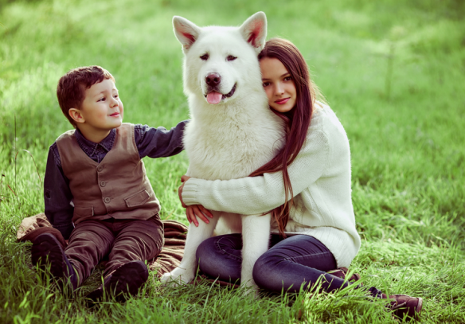
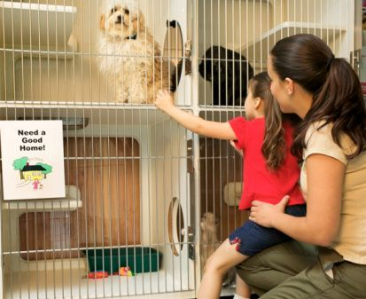

A Pet Can Change Your Life!
Are you feeling sad, lonely or even a little stressed lately? Do you feel isolated from the outside world because it seems as though no one understands what you're going through? If so, you may want to try out a new therapeutic treatment: Owning a pet.
It's no secret that some of us have voids in our lives that can't be filled by other people, at least not as often as we'd like. For many, our lifestyles may depend, whether we realize it or not, on a support system that helps balance out our physical, emotional and mental states
Adoption is a reward!
Each year, 2.7 million adoptable dogs and cats are euthanized in the United States, simply because too many pets come into shelters and too few people consider adoption when looking for a pet. Animal shelters and rescue groups are brimming with happy, healthy pets just waiting for someone to take them home.
Most shelter pets wound up there because of a human problem like a move or a divorce, not because the animals did anything wrong. Many are already housetrained and used to living with families.
Where pets comes first!

Professional, committed staff who knows all the animals in the shelter well and will be able to make the perfect matching for your way of living. All shelter animals are well treated, vaccinated and spayed/castrated.
They are all taking daily walks with our volunteers, which allows us to get to know their behavior outside and makes it easier to train them, and get them used to human company.